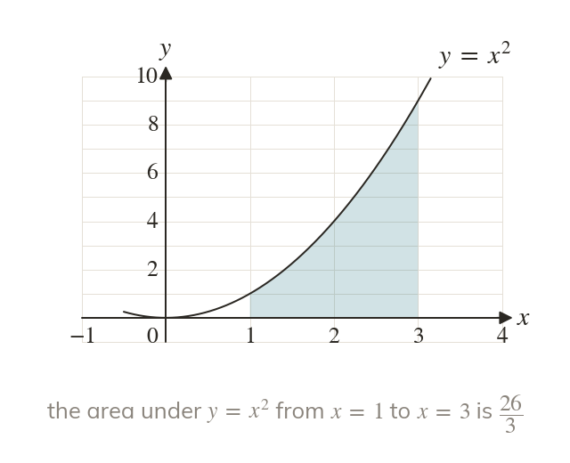
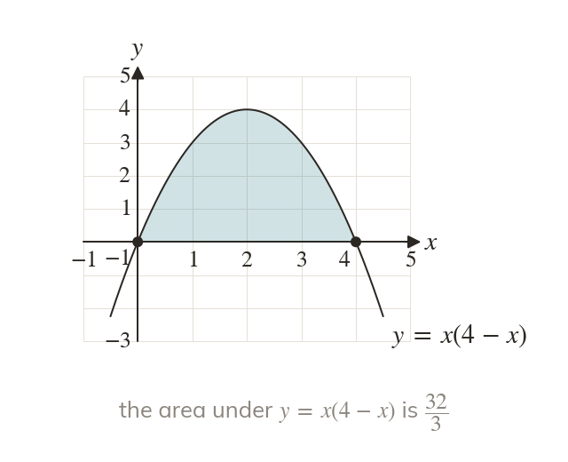
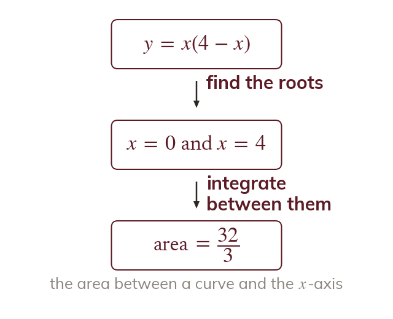
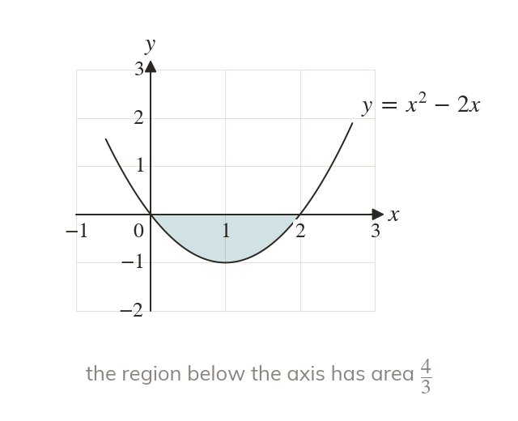
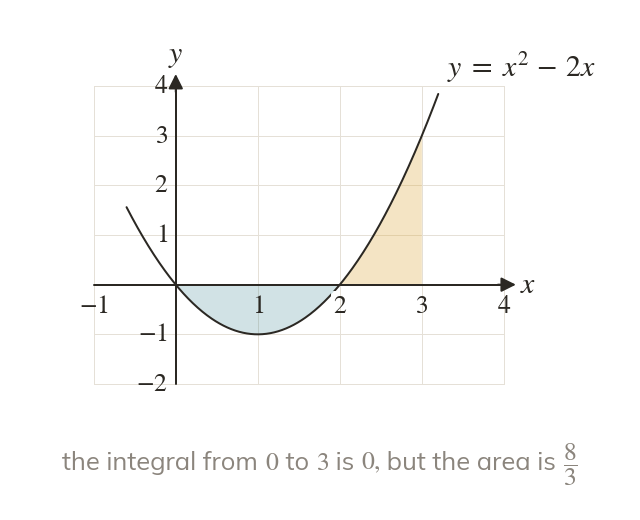
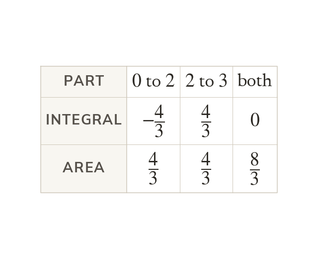

Area as an integral
The area between the x-axis and the lines and is , where the curve is above the axis. Under from to it is
A definite integral measures the area between a curve and the x-axis. Below the axis it comes out negative, so this lesson finds every area as a positive number, ready for the area between a curve and a line in
Work down the page at your own pace. Write every answer in your book first, then click to check it.
Read each card, then follow the worked examples one step at a time.

The area between the x-axis and the lines and is , where the curve is above the axis. Under from to it is

A region bounded by a curve and the x-axis alone runs between the roots. meets the x-axis at and so the area is

A quick sketch shows where the region is and which limits to use. Then integrate and give the area exactly, or to s.f. if asked.
Pick an answer. If it's wrong, the feedback tells you which mistake it was.
Write the blanks in your book first, then tap each one to check.
Read each card, then follow the worked examples one step at a time.

Where the curve is below the x-axis, so the integral is negative. so the area is

Across a root, the parts above and below the axis cancel. but the two parts each have area

Integrate each part on its own, then add the sizes to get
Taking the size of the whole integral gives which is wrong.
Pick an answer. If it's wrong, the feedback tells you which mistake it was.
Write the blanks in your book first, then tap each one to check.
Finished? Next lesson: 13.7 Areas Between Curves and Lines.
For each skill, tap the one that is true for you today. Your Revise pages start with anything you mark Not yet.
Your ratings are saved on this device only.
Log in, then search for a code to practise that skill.